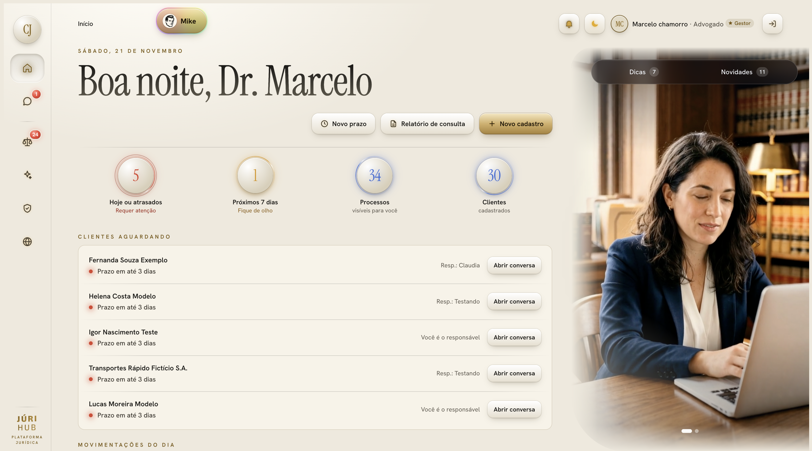
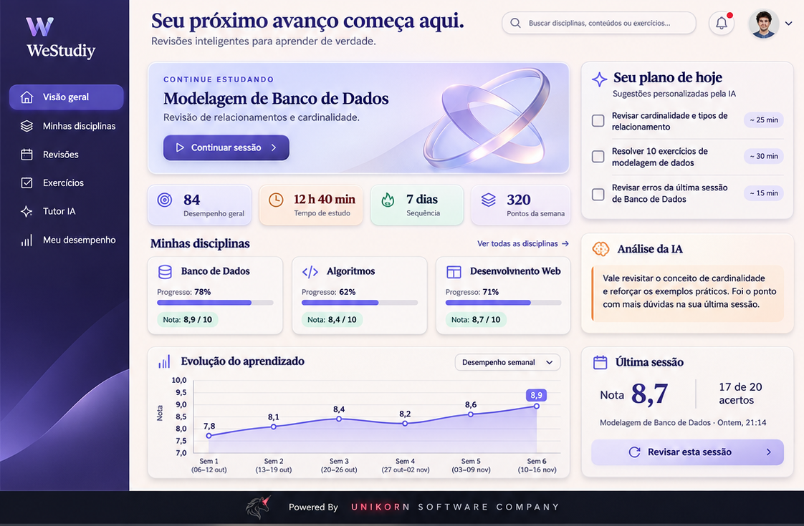

Projeto de Sistema de Gestão Jurídica

Este é um projeto em desenvolvimento, de um sistema de gestão jurídica, para auxiliar advogados na organização e gerenciamento de processos judiciais e escritórios de advocacia.
Olá, eu sou Marcelo! Um entusiasta de tecnologia e desenvolvimento web, estudante de Engenharia de Software pela UDF. Gosto muito de praticar Vibe Coding para poder acelerar meu aprendizado em programação e poder implementar sites e aplicativos de maneira mais rápida e eficiente.
Aqui estão alguns dos projetos que desenvolvo:

Este é um projeto em desenvolvimento, de um sistema de gestão jurídica, para auxiliar advogados na organização e gerenciamento de processos judiciais e escritórios de advocacia.

Este é um projeto na fase conceitual ainda, sobre um software de aprendizado, cujo foco é aprender pela prática e repetição de exercícios.
Entre em contato comigo:
Email: marcelochamorro.dev@icloud.com
Telefone: (61) 99184-4917